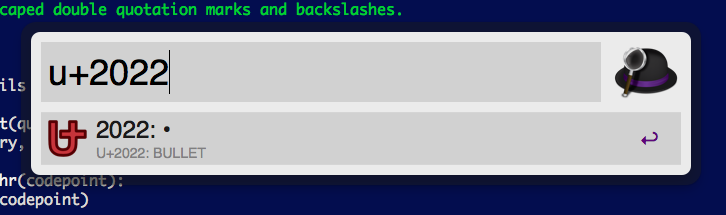
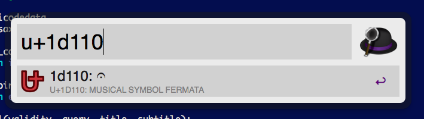
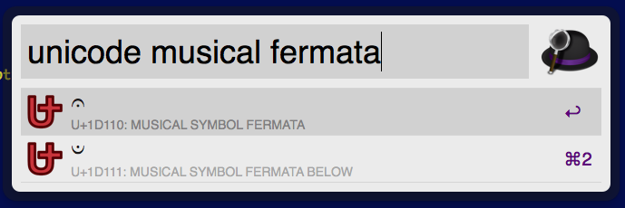
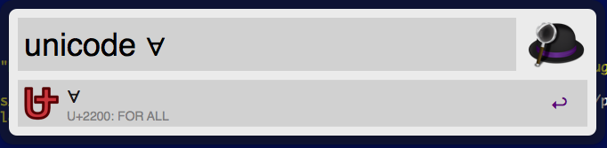

Latest version: Download / History
Details (ja): http://blog.livedoor.jp/kosugip/archives/1719584.html
See also: our repository

also accepts codepoints outside of the BMP.

“unicode” keyword allows you to query by unicode name

also you can reverse query
